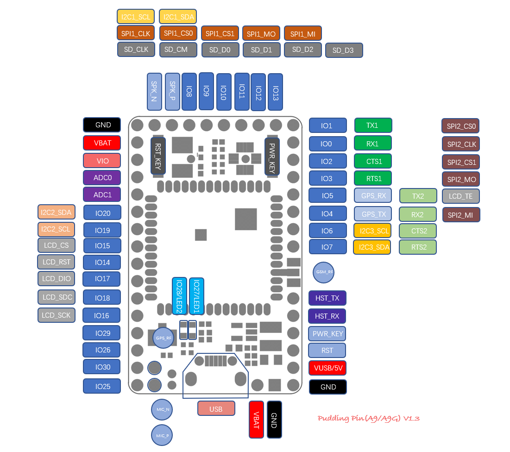

GPIO (General Purpose Input Output)通用输入输出接口
Open power of GPIO first before config GPIO
bool PM_PowerEnable(Power_Type_t powerType, bool isOn)
```c
函数来打开对应的IO口电源,不同IO口对应的电源如下：
```c
typedef enum{
POWER_TYPE_VPAD = 0, // GPIO0 ~ GPIO7 and GPIO25 ~ GPIO36 2.8V //always on
POWER_TYPE_MMC, // GPIO8 ~ GPIO13 1.9V
POWER_TYPE_LCD, // GPIO14 ~ GPIO18 1.9V
POWER_TYPE_CAM, // GPIO19 ~ GPIO24 1.9V
POWER_TYPE_MAX
}Power_Type_t;
比如：
- Use GPIO5, call
PM_PowerEnable(POWER_TYPE_VPAD,true);- Use I2C2, we should config IO19 and IO20, so call
PM_PowerEnable(POWER_TYPE_CAM,true);
In addition to the general IO function, some of the pins also have multiplexing functions.

Example:CSDK demo/gpio
1. Enumerated type
1.1. GPIO_PIN
GPIO Pins
typedef enum{
GPIO_PIN0 = 0, //IO 可中断
GPIO_PIN1, //IO 可中断
GPIO_PIN2, //IO 可中断
GPIO_PIN3, //IO 可中断
GPIO_PIN4, //IO 可中断
GPIO_PIN5, //IO 可中断
GPIO_PIN6, //IO 可中断
GPIO_PIN7, //IO 可中断
GPIO_PIN8,
GPIO_PIN9,
GPIO_PIN10,
GPIO_PIN11,
GPIO_PIN12,
GPIO_PIN13,
GPIO_PIN14,
GPIO_PIN15,
GPIO_PIN16,
GPIO_PIN17,
GPIO_PIN18,
GPIO_PIN19,
GPIO_PIN20,
GPIO_PIN21,
GPIO_PIN22,
GPIO_PIN23,
GPIO_PIN24,
GPIO_PIN25,
GPIO_PIN26,
GPIO_PIN27,
GPIO_PIN28,
GPIO_PIN29,
GPIO_PIN30,
GPIO_PIN31,
GPIO_PIN32,
GPIO_PIN33,
GPIO_PIN34,
GPIO_PIN_MAX
}GPIO_PIN;
1.2. GPIO_MODE
IO mode
typedef enum{
GPIO_MODE_OUTPUT = 0,
GPIO_MODE_INPUT,
GPIO_MODE_INPUT_INT, // interrupt mode
GPIO_MODE_MAX
}GPIO_MODE;
1.3. GPIO_LEVEL
gpio level
typedef enum{
GPIO_LEVEL_LOW = 0,
GPIO_LEVEL_HIGH = 1
}GPIO_LEVEL;
1.4. GPIO_INT_TYPE
Interrupt type
typedef enum {
GPIO_INT_TYPE_HIGH_LEVEL = 0,
GPIO_INT_TYPE_LOW_LEVEL,
GPIO_INT_TYPE_RISING_EDGE,
GPIO_INT_TYPE_FALLING_EDGE,
GPIO_INT_TYPE_RISING_FALLING_EDGE,
GPIO_INT_TYPE_MAX
}GPIO_INT_TYPE;
2. Struct
2.1. GPIO_INT_callback_param_t
interrupt callbak parameter type
typedef struct{
GPIO_PIN pin;
}GPIO_INT_callback_param_t;
2.2. PCallbackINT
Interrupt callback type
typedef void (*PCallbackINT)(GPIO_INT_callback_param_t* param);
2.3. GPIO_INT_config_t
Interrupt configuration
typedef struct{
uint16_t debounce; //去抖时间（ms）
GPIO_INT_TYPE type ;
PCallbackINT callback;
}GPIO_INT_config_t;
2.4. GPIO_config_t
GPIO configuration
typedef struct{
GPIO_PIN pin ;
GPIO_MODE mode ;
GPIO_LEVEL defaultLevel;
GPIO_INT_config_t intConfig ;
}GPIO_config_t;
3. Function Interface
3.1. GPIO_Init
bool GPIO_Init(GPIO_config_t config);
Brief
Initialize GPIO
Parameters
- config：GPIO configuration
Return
- bool：config success or fail
3.2. GPIO_GetConfig
void GPIO_GetConfig(GPIO_PIN pin,GPIO_config_t* config);
Brief
Get GPIO configuration
Parameters
- config：GPIO config
Return
3.3. GPIO_SetLevel
bool GPIO_SetLevel(GPIO_config_t gpioConf, GPIO_LEVEL level);
Brief
Config GPIO output level
Parameters
- gpioConf：GPIO init configuration variable
- level: high or low level
Return
- bool： is set success
3.4. GPIO_Set
bool GPIO_Set(GPIO_PIN pin, GPIO_LEVEL level);
Brief
Setting the GPIO level is just like the GPIO_SetLevel function, but the parameters are different.
Parameters
- pin:GPIO pin
- level: high or low level
Return
- bool: set success or not
3.5. GPIO_GetLevel
bool GPIO_GetLevel(GPIO_config_t gpioConf, GPIO_LEVEL* level);
Brief
Get level of GPIO
Parameters
- gpioConf:GPIO init configuratioin variable
- level: level of GPIO
Return
- bool：Is get success
3.6. GPIO_Get
bool GPIO_Get(GPIO_PIN pin, GPIO_LEVEL* level);
Brief
Get GPIO level, the same function with GPIO_GetLevel, but parameter not the same
Parameters
- pin:GPIO pin
- level: level of GPIO
Return
- bool：Is get success
3.7. GPIO_Close
bool GPIO_Close(GPIO_PIN pin);
Brief
Close GPIO and release resources of GPIO
Parameters
- pin:GPIO pin
Return
- bool：Is close success